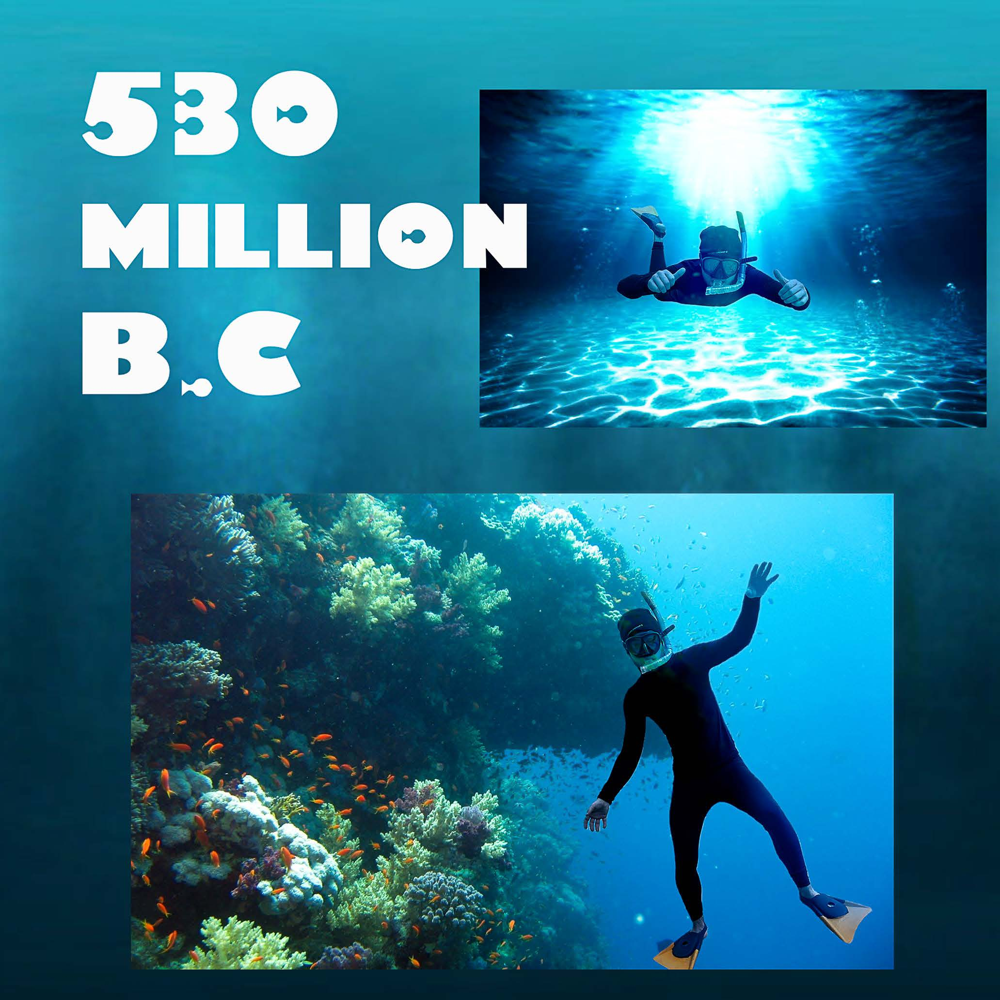
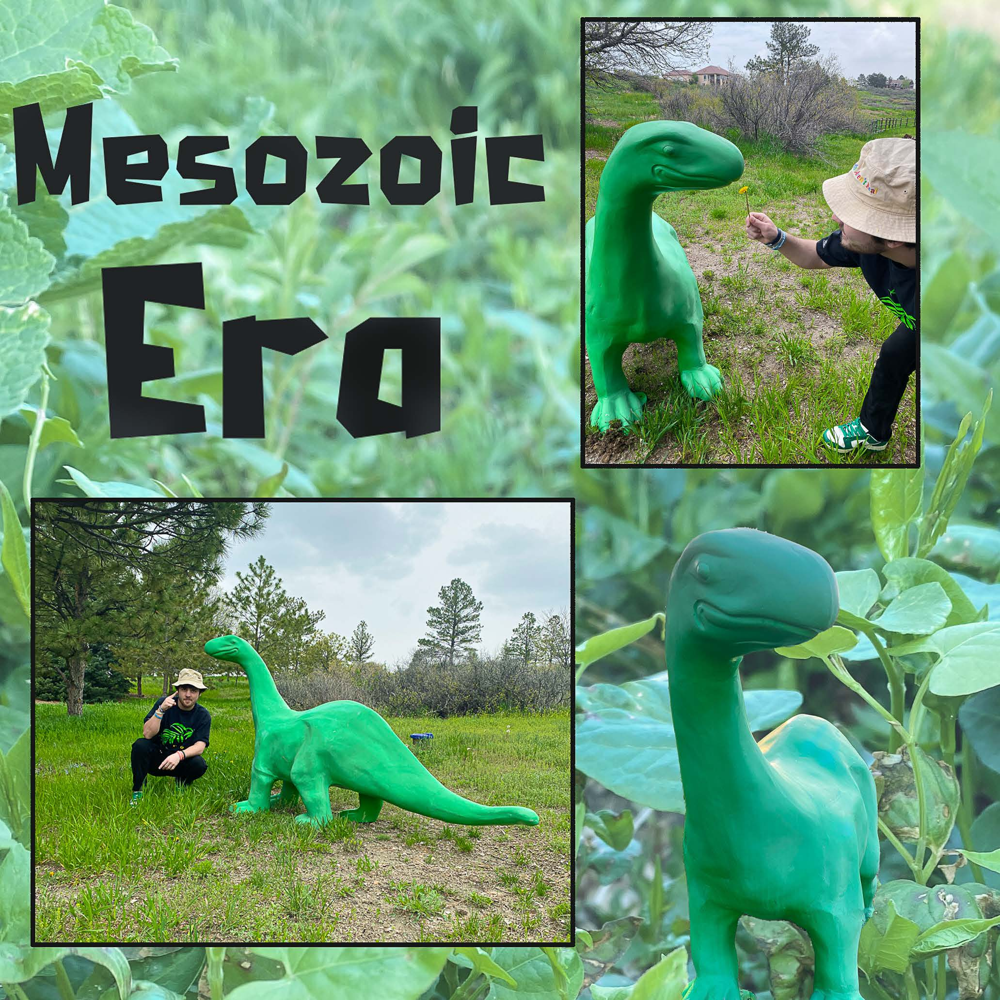
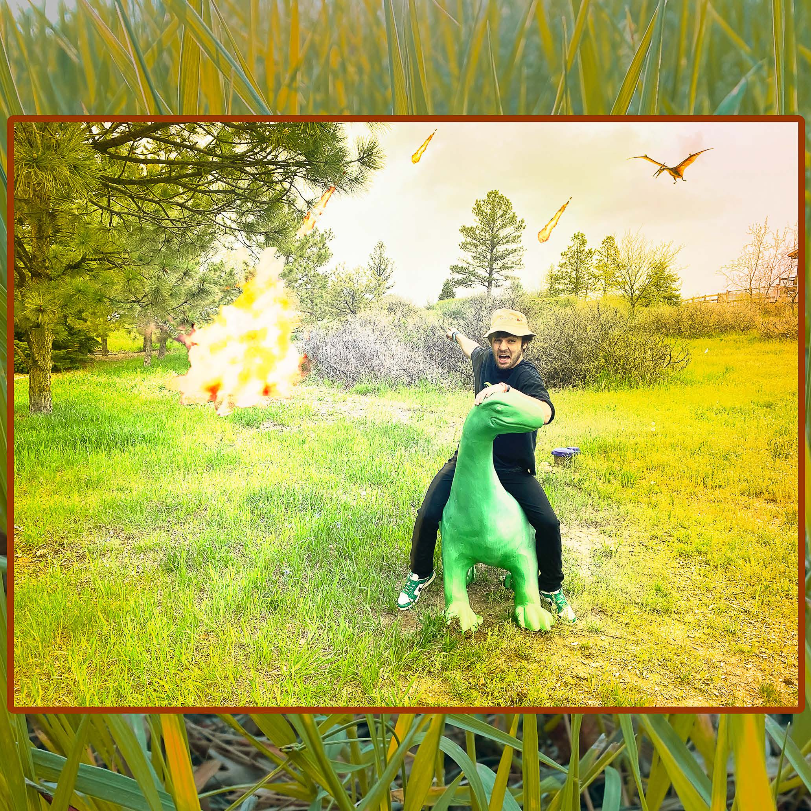
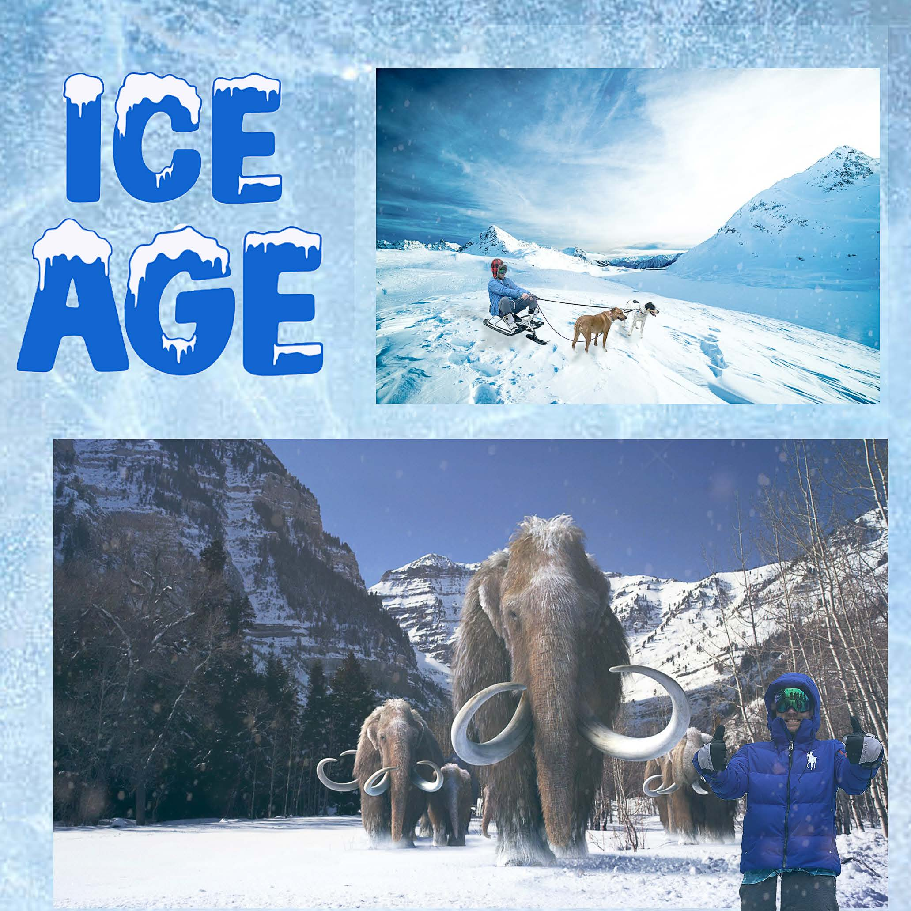
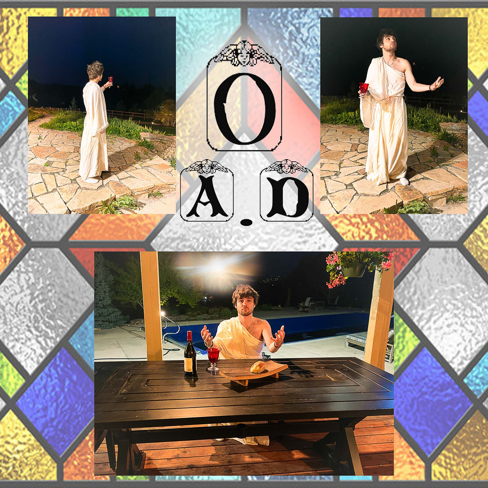
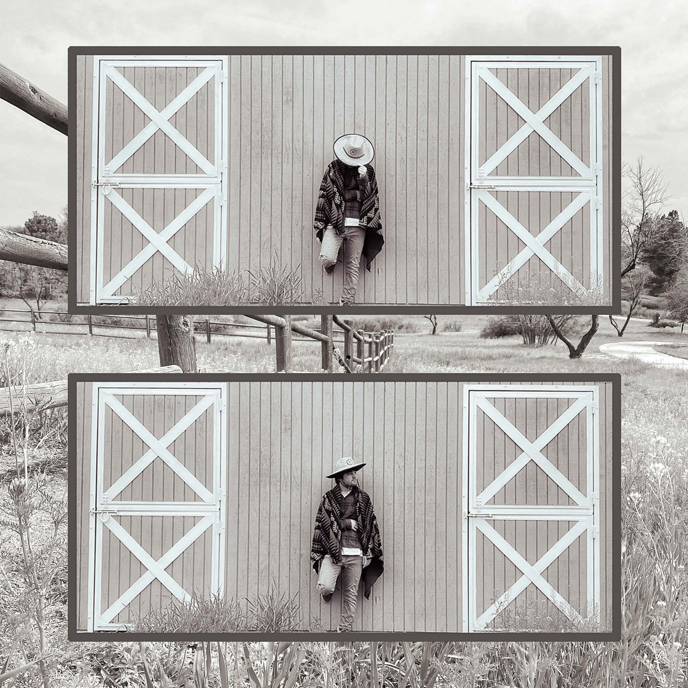
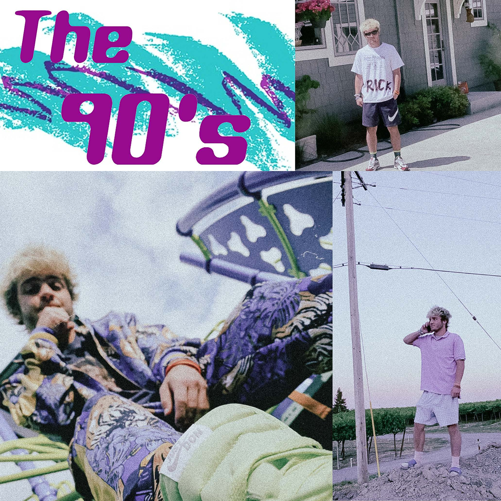
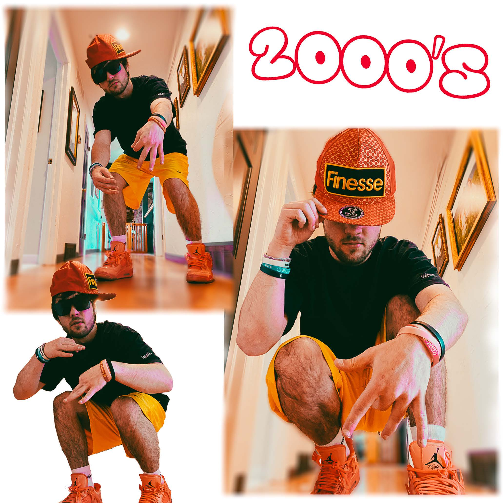

Hello there, I'm Eric Scrivanich, a graduating senior at CU Boulder where I've been focusing on my passions for Marketing and Creative Technology Design . My story isn't just about a degree; it's about an unyielding drive to think differently and innovate. Since a young From crafting captivating marketing strategies to diving into the complex world of game development, I'm all about blending creativity with functionality.








